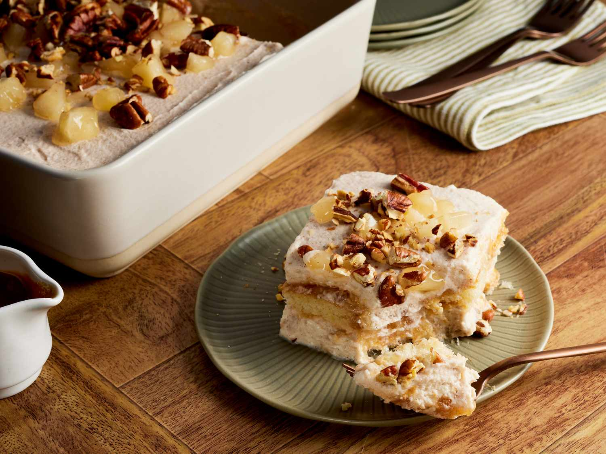

Apple Pie Tiramisu Recipe

Description
Apple Pie Tiramisu has all the flavor of your favorite apple pie piled into a creamy, layered treat. Ladyfingers are soaked in apple cider instead of espresso. Toasted pecans add a nice buttery crunch to each bite.
Apple Pie Tiramisu Ingredients
Apple Filling
- 1 (21-ounce) can apple pie fruit filling or topping (such as Lucky Leaf®)
- 1/2 teaspoon ground cinnamon
- 1/8 teaspoon table salt
- 1/8 teaspoon ground nutmeg
Tiramisu
- 1 (8-ounce) container mascarpone cheese, softened (such as BelGioioso®)
- 2 cups heavy whipping cream
- 2/3 cup granulated sugar
- 2 teaspoons ground cinnamon
- 1 teaspoon vanilla extract
- 1/4 teaspoon salt
- 1/4 teaspoon ground nutmeg
- 1 cup apple cider
- 24 ladyfingers cookies
- 1/4 cup caramel topping, divided, plus more for drizzling (such as Smucker's®)
- chopped toasted pecans for garnish (optional)